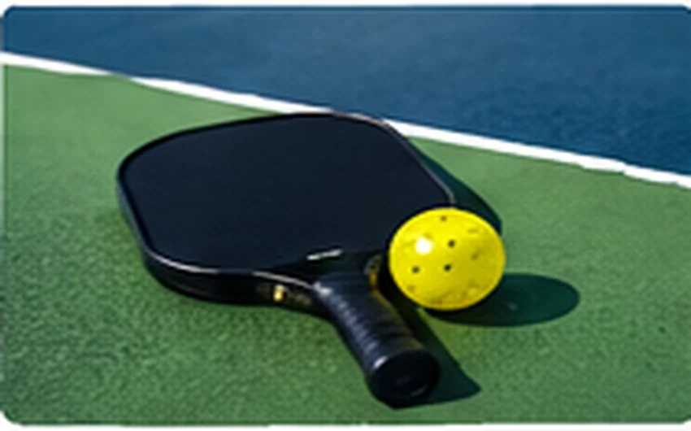
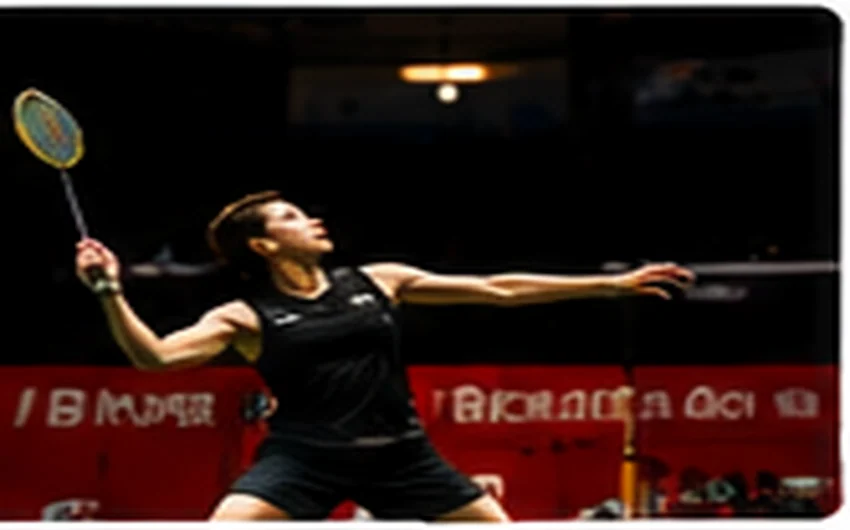
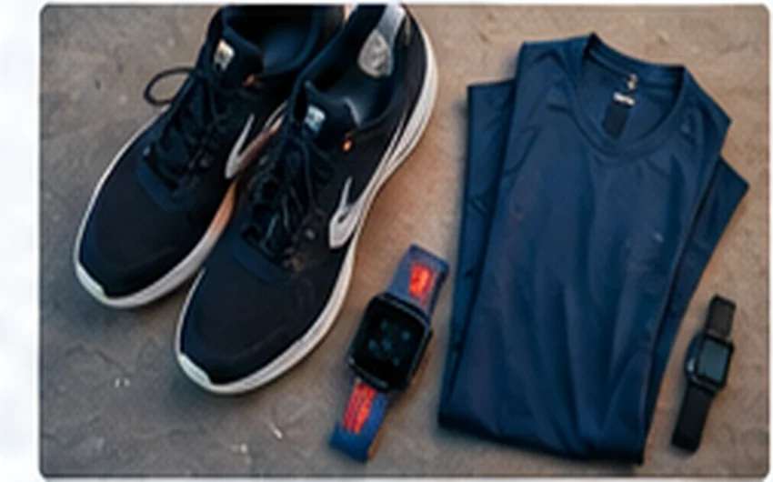
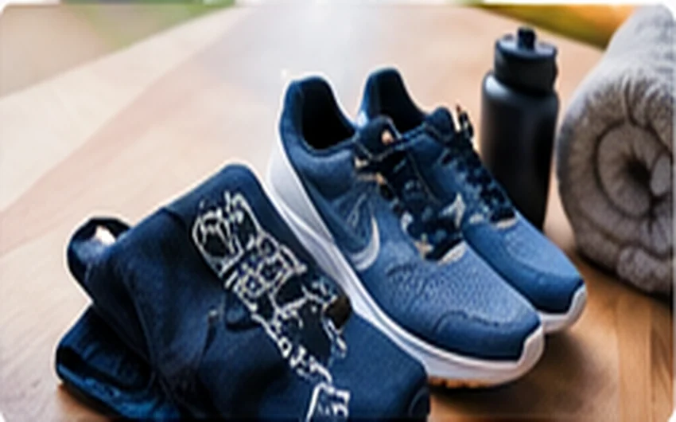
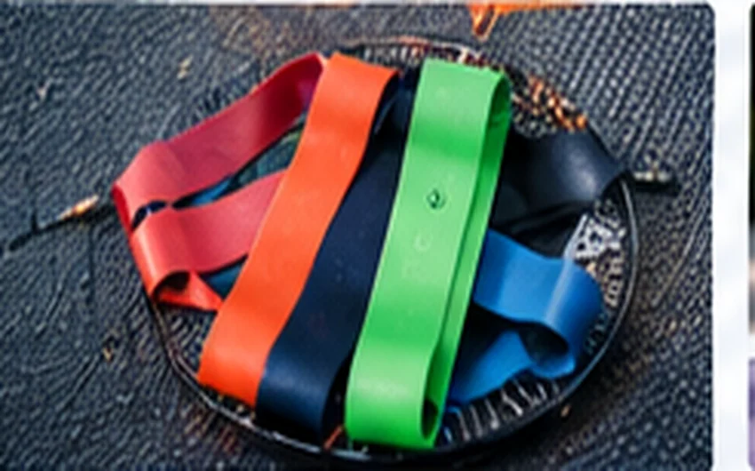
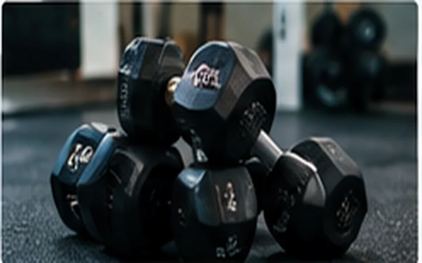
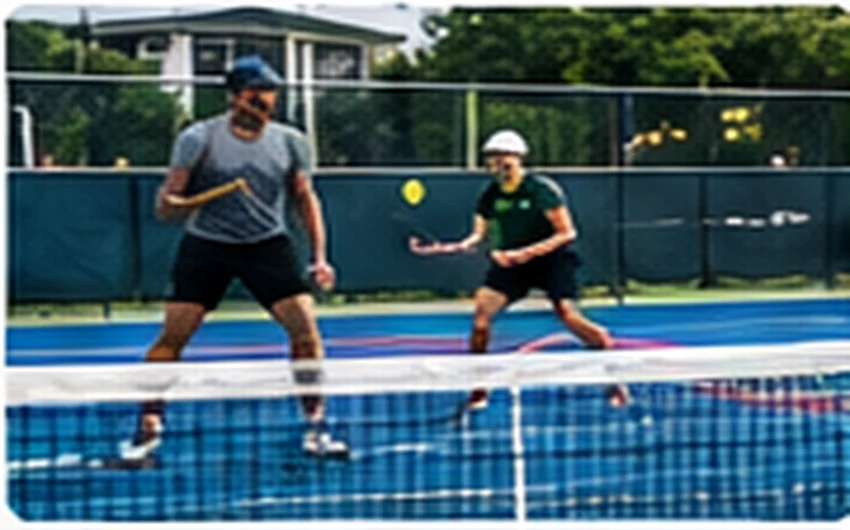
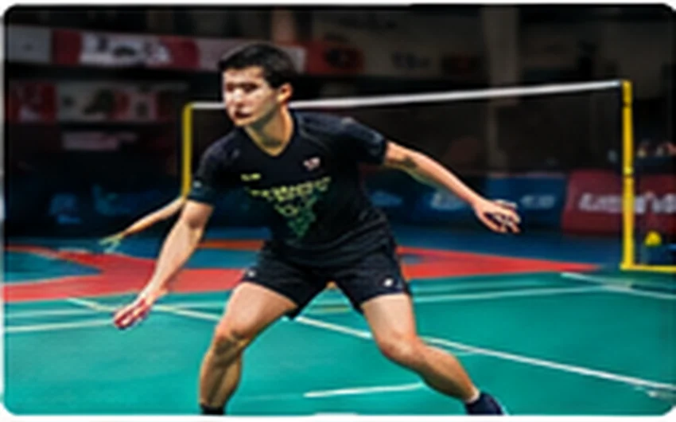

Tập gym cho người mới: bắt đầu từ đâu cho đúng?
Lộ trình nhập môn ưu tiên kỹ thuật, nhịp tập và khả năng duy trì thay vì mức tạ. Khám phá cách bắt đầu hợp lý và điều chỉnh việc tập theo sức.
Khám phá 48 bài viết về kỹ thuật, dinh dưỡng và dụng cụ thể thao — đọc dễ hiểu, áp dụng thực tế.
Lộ trình nhập môn ưu tiên kỹ thuật, nhịp tập và khả năng duy trì thay vì mức tạ. Khám phá cách bắt đầu hợp lý và điều chỉnh việc tập theo sức.

Chạy hiệu quả bắt đầu bằng tư thế thoải mái, bước tự nhiên và nhịp tăng dần.

Hiểu luật giao bóng, hai lần nảy và vùng không volley giúp người mới tự tin vào sân.

Chỉ cần nắm giao cầu, ô sân và cách ghi điểm đã có thể bắt đầu thi đấu phong trào.

Dụng cụ thể thaoThiết bị hữu ích khi giúp nhận ra xu hướng, nhưng dữ liệu cảm biến không phải chẩn đoán y tế.

Dụng cụ thể thaoQuần áo tốt cần cho phép chuyển động, quản lý độ ẩm và phù hợp thời tiết, không chỉ đẹp khi đứng yên.

Dụng cụ thể thaoMột tấm thảm tốt tạo bề mặt an toàn cho bài tập, không nhất thiết phải dày nhất hoặc đắt nhất.

Dụng cụ thể thaoDây kháng lực gọn và linh hoạt, nhưng chất lượng dây và điểm neo quyết định mức độ an toàn.
Mức tạ phù hợp là mức bạn kiểm soát trọn chuyển động và còn khả năng giữ kỹ thuật tốt.
Không có đôi giày tối ưu cho mọi môn; lực tác động và hướng di chuyển cần được cân nhắc trước thương hiệu.
Tập luyện thông minh, làm chủ kỹ thuật sức mạnh và xây dựng thói quen bền vững.
Kỹ thuật chạy, giáo án hợp lý và những quyết định nhỏ giúp mỗi kilomet thoải mái hơn.
Từ luật chơi đến phối hợp trên sân: kiến thức dễ áp dụng cho người mới và người chơi phong trào.
Tư duy chiến thuật, nhịp di chuyển và kỹ thuật đánh cầu an toàn, hiệu quả.
Cải thiện kỹ thuật cá nhân, thể lực và khả năng đọc tình huống trên sân.
Kỹ thuật nền tảng, kiểm soát khoảng cách và nguyên tắc an toàn khi tập đối kháng.
Ăn uống thực tế để đáp ứng nhu cầu vận động, hồi phục và sức khỏe lâu dài.
Hướng dẫn chọn, bảo quản và sử dụng dụng cụ theo nhu cầu thực tế thay vì chạy theo quảng cáo.

PickleballĐánh đôi hiệu quả đến từ cùng dịch chuyển và phân chia trách nhiệm rõ ràng.

Cầu lôngGiao cầu tốt phải hợp luật, có mục đích chiến thuật và khiến người nhận khó tấn công ngay.
 Bóng đá
Bóng đáChiến thuật không chỉ là sơ đồ 4-3-3; đó là cách cả đội phản ứng khi có và mất bóng.
Bước chân giữ khoảng cách đánh và thoát đòn; mất thế đứng khiến kỹ thuật tay giảm hiệu quả.
 Dinh dưỡng thể thao
Dinh dưỡng thể thaoNhu cầu nước thay đổi mạnh theo thời tiết, mồ hôi, cường độ và cơ thể; tránh cả uống quá ít lẫn quá mức.
Dây kháng lực gọn và linh hoạt, nhưng chất lượng dây và điểm neo quyết định mức độ an toàn.
Không có một giáo án, một đôi giày hay một công thức dinh dưỡng dành cho tất cả. Những hướng dẫn trên Tạp chí Thể thao tập trung vào nguyên tắc, bối cảnh và khả năng thực hành.
Khám phá hướng dẫn tập luyện →Lộ trình nhập môn ưu tiên kỹ thuật, nhịp tập và khả năng duy trì thay vì mức tạ.
02Chạy hiệu quả bắt đầu bằng tư thế thoải mái, bước tự nhiên và nhịp tăng dần.
03Chỉ cần nắm giao cầu, ô sân và cách ghi điểm đã có thể bắt đầu thi đấu phong trào.
04Protein góp phần sửa chữa và duy trì mô cơ; tổng thể khẩu phần quan trọng hơn một loại bột bổ sung.